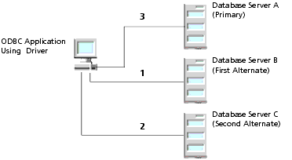

Using Client Load Balancing
Client load balancing is a useful feature that is available in the following DataDirect Connect for ODBC drivers: DB2 Wire Protocol, Informix Wire Protocol, Oracle Wire Protocol, Oracle, SQL Server Wire Protocol (UNIX only), and Sybase Wire Protocol.
Client load balancing helps distribute new connections in your environment so that no one server is overwhelmed with connection requests. When client load balancing is enabled, the order in which primary and alternate database servers are tried is random. For example, let us suppose that client load balancing is enabled as shown in Figure 2-2.
Figure 2-2. Client Load BalancingFirst, Database Server B is tried (1). Then, Database Server C may be tried (2), followed by a connection attempt to Database Server A (3). In contrast, if client load balancing was not enabled in this scenario, each database server would be tried in sequential order, primary server first; then, each alternate server based on its entry order in the alternate servers list.
For details on configuring client load balancing, see the appropriate driver chapter.